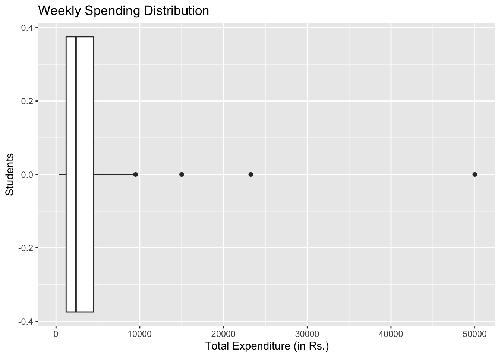
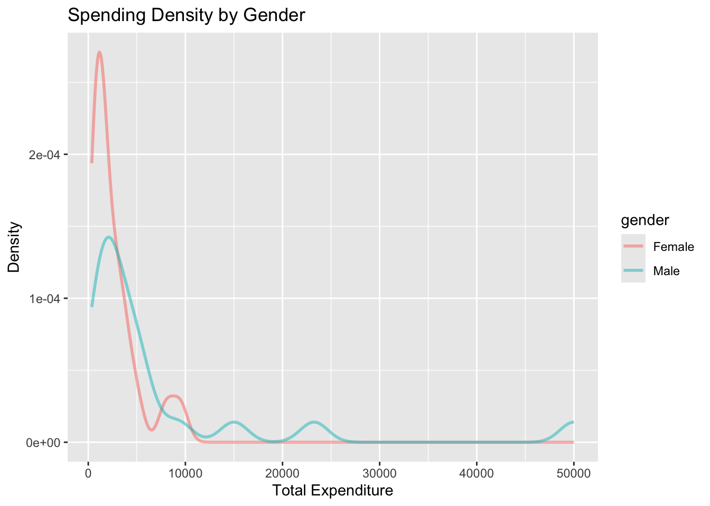
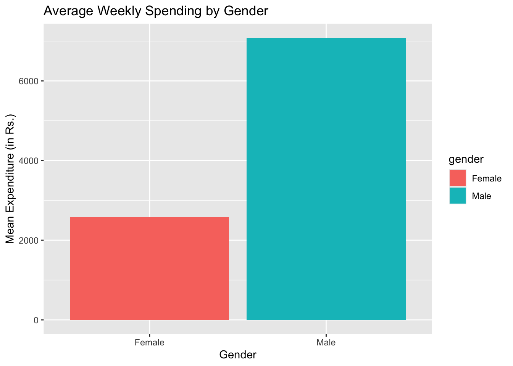

── Attaching core tidyverse packages ──────────────────────── tidyverse 2.0.0 ──
✔ dplyr 1.1.4 ✔ purrr 1.1.0
✔ forcats 1.0.0 ✔ stringr 1.5.2
✔ ggplot2 4.0.0 ✔ tibble 3.3.0
✔ lubridate 1.9.4 ✔ tidyr 1.3.1
── Conflicts ────────────────────────────────────────── tidyverse_conflicts() ──
✖ dplyr::filter() masks stats::filter()
✖ dplyr::lag() masks stats::lag()
ℹ Use the conflicted package (<http://conflicted.r-lib.org/>) to force all conflicts to become errors
Loading required package: scales
Attaching package: 'scales'
The following object is masked from 'package:purrr':
discard
The following object is masked from 'package:readr':
col_factor
Loading required package: ggridges
New to ggformula? Try the tutorials:
learnr::run_tutorial("introduction", package = "ggformula")
learnr::run_tutorial("refining", package = "ggformula")
Registered S3 method overwritten by 'mosaic':
method from
fortify.SpatialPolygonsDataFrame ggplot2
The 'mosaic' package masks several functions from core packages in order to add
additional features. The original behavior of these functions should not be affected by this.
Attaching package: 'mosaic'
The following object is masked from 'package:Matrix':
mean
The following object is masked from 'package:scales':
rescale
The following objects are masked from 'package:dplyr':
count, do, tally
The following object is masked from 'package:purrr':
cross
The following object is masked from 'package:ggplot2':
stat
The following objects are masked from 'package:stats':
binom.test, cor, cor.test, cov, fivenum, IQR, median, prop.test,
quantile, sd, t.test, var
The following objects are masked from 'package:base':
max, mean, min, prod, range, sample, sum
Attaching package: 'skimr'
The following object is masked from 'package:mosaic':
n_missing
Attaching package: 'naniar'
The following object is masked from 'package:skimr':
n_complete
Attaching package: 'janitor'
The following objects are masked from 'package:stats':
chisq.test, fisher.test
Attaching package: 'tinytable'
The following object is masked from 'package:ggplot2':
theme_void
Attaching package: 'crosstable'
The following object is masked from 'package:purrr':
compactWeekly expenditure
Are Srishti students really Money-pal? 💸

About the Data
This data set is derived from the peasants of Srishti Manipal Institute to analyse the spending behaviour in a week.
Data Dictionary
- Qualitative variables
-
Name: Name of the student (aka. peasant)
-
Gender: Gender of the students categorized as ‘Male’ & ‘Female’
- Quantitative variables
-
Total_Expenditure_Last_Week: Total amount of money spent in the last week by the student
Hypothesis
- Do Srishti students spend more than what is normally expected?
Something more to look for
- Is there a difference in spending behaviour amongst different gender?
Setup
Inspecting the Data
weekly_expends_data <- read_csv("~/Documents/R_work/DataRchive/posts/A3_Ashmita/Datasets/4-weekly_expenditure.csv") %>%
janitor::clean_names(case = "snake")New names:
Rows: 40 Columns: 6
── Column specification
──────────────────────────────────────────────────────── Delimiter: "," chr
(2): Name, Gender dbl (1): Total_Expenditure_Last_Week lgl (3): ...4, ...5,
...6
ℹ Use `spec()` to retrieve the full column specification for this data. ℹ
Specify the column types or set `show_col_types = FALSE` to quiet this message.
• `` -> `...4`
• `` -> `...5`
• `` -> `...6`weekly_expends_data# A tibble: 40 × 6
name gender total_expenditure_last_week x4 x5 x6
<chr> <chr> <dbl> <lgl> <lgl> <lgl>
1 Radha Female 2000 NA NA NA
2 Prerana Female 1200 NA NA NA
3 Chris Male 15000 NA NA NA
4 Nireeksha Female 3620 NA NA NA
5 Supraj Male 560 NA NA NA
6 Adit Male 2200 NA NA NA
7 Shweta Female 1500 NA NA NA
8 Diya Female 1206 NA NA NA
9 Kshama Female 1400 NA NA NA
10 Savannah Female 2500 NA NA NA
# ℹ 30 more rowsChecking for missing data
weekly_expends_data %>%
visdat::vis_miss()
weekly_expends_data %>%
visdat::vis_dat()
Removing the unfilled columns
weekly_expends_mod1 <- weekly_expends_data%>%
select(name, gender, total_expenditure_last_week)
weekly_expends_mod1# A tibble: 40 × 3
name gender total_expenditure_last_week
<chr> <chr> <dbl>
1 Radha Female 2000
2 Prerana Female 1200
3 Chris Male 15000
4 Nireeksha Female 3620
5 Supraj Male 560
6 Adit Male 2200
7 Shweta Female 1500
8 Diya Female 1206
9 Kshama Female 1400
10 Savannah Female 2500
# ℹ 30 more rowsMunging the Data
weekly_expends_mod2 <- weekly_expends_mod1 %>%
mutate(gender = as.factor(gender))
weekly_expends_mod2# A tibble: 40 × 3
name gender total_expenditure_last_week
<chr> <fct> <dbl>
1 Radha Female 2000
2 Prerana Female 1200
3 Chris Male 15000
4 Nireeksha Female 3620
5 Supraj Male 560
6 Adit Male 2200
7 Shweta Female 1500
8 Diya Female 1206
9 Kshama Female 1400
10 Savannah Female 2500
# ℹ 30 more rowsExamining the Data
Summarizing in a table
summary(weekly_expends_mod2) name gender total_expenditure_last_week
Length:40 Female:20 Min. : 365
Class :character Male :20 1st Qu.: 1204
Mode :character Median : 2350
Mean : 4833
3rd Qu.: 4475
Max. :50000 Observation
We can see that there is an equal (50%) representation of male and female, thus eliminating any gender bias in the data collection.
The average spending of these peasants in a week is Rs. 2350
Spending varies dramatically from lowest record being Rs. 365 to highest being Rs. 50,000 per week
25% os these students spend under ₹1,204 weekly and top 25% spend over ₹4,475.
What is the spending behaviour
weekly_expends_mod2 %>%
gf_boxplot(~total_expenditure_last_week, orientation = "y") %>%
gf_labs(
title = "Weekly Spending Distribution",
x = "Total Expenditure (in Rs.)",
y = "Students"
)
weekly_expends_mod2 %>%
arrange(total_expenditure_last_week) %>%
mutate(name = fct_inorder(name)) %>%
gf_col(total_expenditure_last_week ~ name, fill = ~gender) %>%
gf_labs(
title = "=Weekly Spending=",
x = "Student",
y = "Total Expenditure (in Rs.)"
) %>%
gf_theme(axis.text.x = element_text(angle = 90, hjust = 1, vjust = 0.5))
How do different gender spend differently?
weekly_expends_mod2 %>%
gf_boxplot(log10(total_expenditure_last_week) ~ gender, fill = ~gender, orientation = "x") %>%
gf_labs(
title = "Weekly Spending Distribution by Gender",
x = "Gender",
y = "Total Expenditure (in Rs.)",
subtitle = "Comparing median spending and variability"
)
weekly_expends_mod2 %>%
gf_dens(~total_expenditure_last_week, colour = ~gender, fill = ~gender, size = 1, alpha = 0.5) %>%
gf_labs(
title = "Spending Density by Gender",
x = "Total Expenditure",
y = "Density"
)Warning: Using `size` aesthetic for lines was deprecated in ggplot2 3.4.0.
ℹ Please use `linewidth` instead.
weekly_expends_mod2 %>%
group_by(gender) %>%
summarise(mean_spending = mean(total_expenditure_last_week)) %>%
gf_col(mean_spending ~ gender, fill = ~gender) %>%
gf_labs(
title = "Average Weekly Spending by Gender",
x = "Gender",
y = "Mean Expenditure (in Rs.)"
)
weekly_expends_mod2 <- function(x) {
sign(x) * total_expenditure_last_week(abs(x))
}t2 <- wilcox.test(weekly_expends_mod1$total_expenditure_last_week,
mu = 2000,
alternative = "two.sided",
conf.int = TRUE,
conf.level = 0.95) %>%
broom::tidy()Warning in wilcox.test.default(weekly_expends_mod1$total_expenditure_last_week,
: cannot compute exact p-value with tiesWarning in wilcox.test.default(weekly_expends_mod1$total_expenditure_last_week,
: cannot compute exact confidence interval with tiesWarning in wilcox.test.default(weekly_expends_mod1$total_expenditure_last_week,
: cannot compute exact p-value with zeroesWarning in wilcox.test.default(weekly_expends_mod1$total_expenditure_last_week,
: cannot compute exact confidence interval with zeroest2# A tibble: 1 × 7
estimate statistic p.value conf.low conf.high method alternative
<dbl> <dbl> <dbl> <dbl> <dbl> <chr> <chr>
1 2875. 534 0.0452 2013. 4250. Wilcoxon signed ran… two.sided